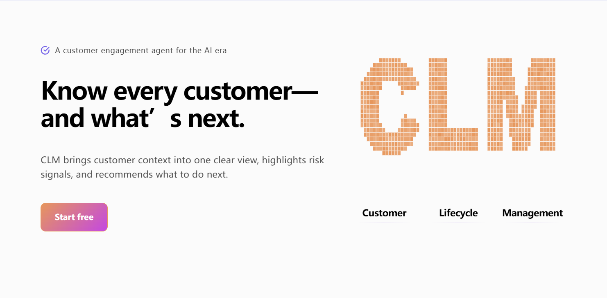

Internship

Software Engineering Intern
Jul 2026 - Sep 2026
Joined the development team for a CRM Agent product, developing its bilingual marketing website and contributing to product testing.
Projects
-
01
Database Management System
Mar 2026 – Jun 2026
Tech Stack: C++, Data Structures, Database Systems
Built core components of a lightweight database management system from scratch in C++.
- Implemented page-based storage and record management. Designed on-page record data layouts and metadata management to support CRUD operations.
- Implemented a B+ Tree-based Index Manager for efficient indexing and range queries.
- Built an iterator-based query processing engine, supporting filtering, projection, block nested-loop joins, index nested-loop joins, and aggregation.
-
02
Machine Learning — Income Classification
Sep 2025 – Dec 2025
Tech Stack: Python, scikit-learn, Pandas, Matplotlib
Built a binary income classification model using the UCI Adult Dataset (48,842 samples, 14 features), covering data preprocessing, model development, and evaluation.
- Developed a Logistic Regression baseline with 5-fold cross-validation, achieving 81% accuracy.
- Compared SVM kernel functions and tuned hyperparameters, achieving 85% accuracy with an RBF kernel.
-
03
UCI Website Search Engine
Mar 2025 – Jun 2025
Tech Stack: Python, BeautifulSoup, Web Crawling, Inverted Index, Natural Language Processing
Developed a Python-based search engine for UCI websites, integrating web crawling, HTML parsing, inverted indexing, query processing, and result ranking.
- Developed a Python web crawler using BeautifulSoup to collect and parse UCI website content, with URL filtering and duplicate-page detection.
- Built a search engine for UCI websites in Python, implementing inverted indexing, query processing, and result ranking.
- Optimized search engine performance through stop-word removal, stemming and on-demand index loading, reducing memory usage and index loading time.